Compromised IAM credentials
Scenario 2: Compromised IAM credentials
Long completed the first attack simulation scenario and returned to his coffee. However, he continued to receive new notifications about Findings related to AWS IAM services. The first notification content indicated that, using IAM credentials, some API calls were made from the IP address that was added to the Threat List (in the previous post).
No personal IAM credentials have ever been exposed or disclosed in any way.
Overview Architecture
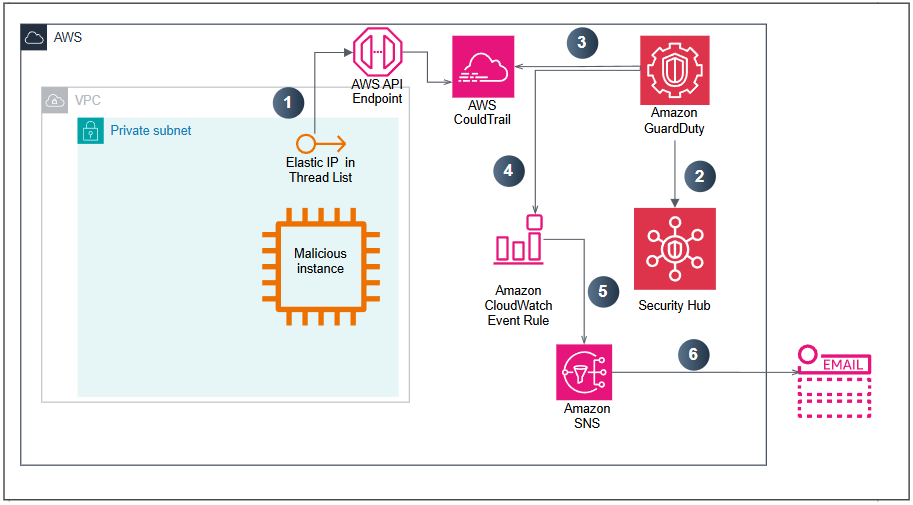
- This EC2-malicious instance is making API calls , the EIP of this instance has been added to the Threat List. The content of the API calls has been recorded in the CloudTrail log.
- Security Hub detects suspicious actions detected by GuardDuty
- GuardDuty looks at CloudTrail Logs along with VPC Flow Logs and DNS Logs , and assesses the situation based on certain baselines.
- GuardDuty generates the corresponding Findings and simultaneously sends the details to the GuardDuty Console and EventBridge Events .
- EventBridge Event Rule triggers the SNS Topic.
- SNS Topic proceeds to send E-mail notifications with relevant information.
Investigation process
To proceed with reviewing the Findings:
- Visiting Security Hub, we discovered a security vulnerability discovered by GuardDuty
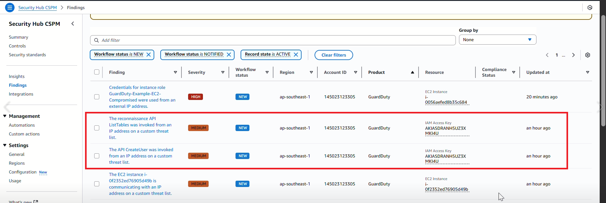
- Access the GuardDuty Console at ap-southeast-1 at here
- We will see the Findings in the following format.
- Recon:IAMUser
- UnauthorizedAccess:IAMUser.
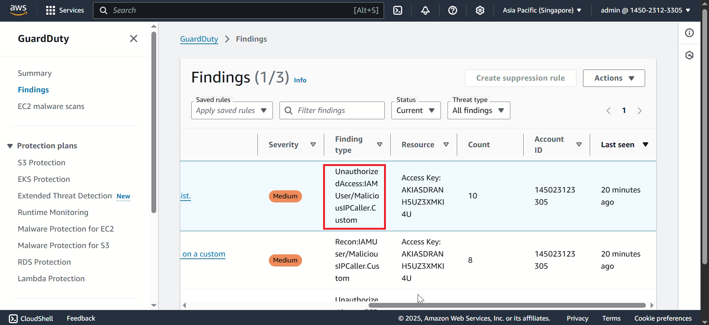
- If there is no Finding, press the Refresh button and wait.
- From Finding Recon:IAMUser/MaliciousIPCaller.Custom, we can easily retrieve some of the following information:
- What happened?
- Which AWS resources are affected?
- When did this event happen?
- Under Resource Affected section, you will find the User Name that is related to this Finding.
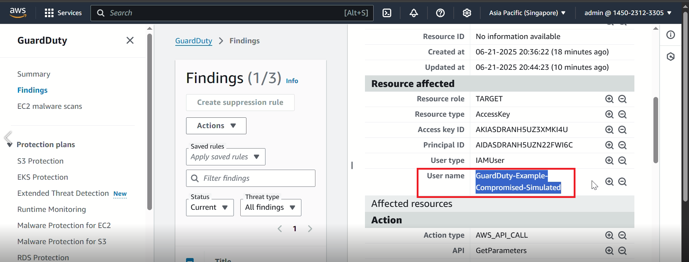
This finding indicates that the IAM credential of the above User Name may have been exposed by API calls originating from the IP address that was previously added to the Threat List .
So what actions did this IAM User perform?
In the Action section, we see that the DescribeParameters action has been performed.
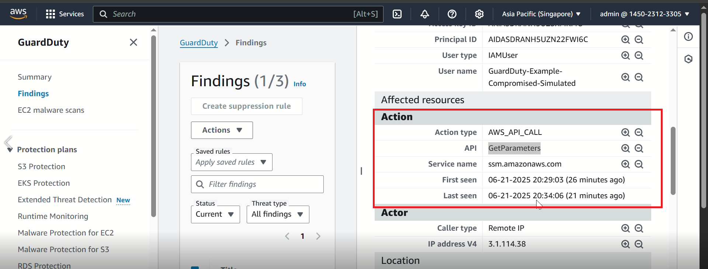
How can we see all the remaining actions, performed by this IAM User, within the last 1 hour or 1 day?
GuardDuty is capable of analyzing large amounts of data to accurately identify the hazards present in your environment. However, during the investigation and remediation steps, we also need to combine different data sources to get the most correlated view possible.
In this case, the analyst can use the insights that can be found in user behavior logs via CloudTrail.
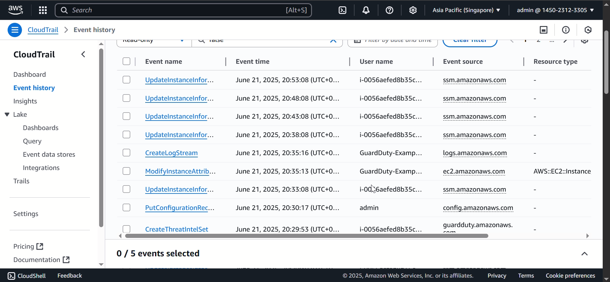
Findings about IAM generated by malicious EC2 instance making API calls and EIP of this instance is in Custom Threat List.
Check EventBridge Event Rule
- Access the EventBridge Event Rule Console at ap-southeast-1.
- In the left navigation bar, under Events , select Rules . You’ll see three rules already set up (by CloudFormation Template), starting with a prefix like GuardDuty-Event…
- Proceed to select the rule named GuardDuty-Event-IAMUser-MaliciousIPCaller
- You will easily notice that there is only 1 target in the Targets area , which is SNS Topic.
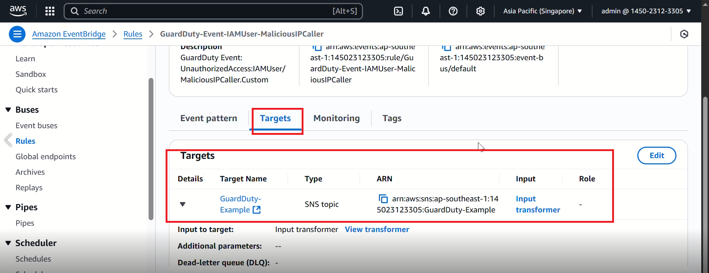
As it turns out, Viet never set up a Lambda Function to perform the Remediation process because the Security team decided that they would do this Finding manually.
The combination of GuardDuty, Security Hub, and EventBridge Events provides the flexibility to easily create an automated Remediation process. Lambda functions or AWS partner solutions are top choices.
For certain Findings, we may just configure notifications and resolve issues manually, instead of automating. Because when designing the automation process, we will have to be very careful and evaluate the results that the Remediation process brings, including both advantages and disadvantages.
Additionally, we can set Target for some other AWS resources like SSM Run Commands or Step Function State Machine.
Resolving the situation
Since Viet has never set up a Remediation process for this Finding, Long needs to do it manually. While the Security team is analyzing the behavior of this IAM user to better determine the scope of the vulnerability, Long needs to take some steps to disable the Access Key to immediately prevent further actions.
- Access the IAM Console at here
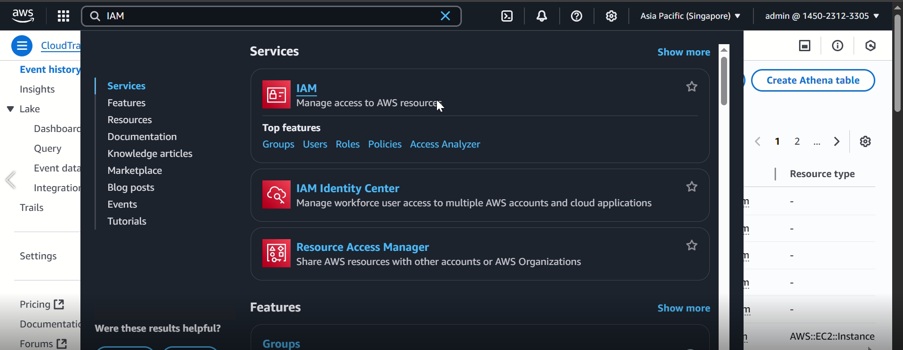
- In the left navigation bar, select Users.
- Based on GuardDuty Finding and E-mail notification, we can easily select the IAM user - GuardDuty-Example-Compromised-Simulated.
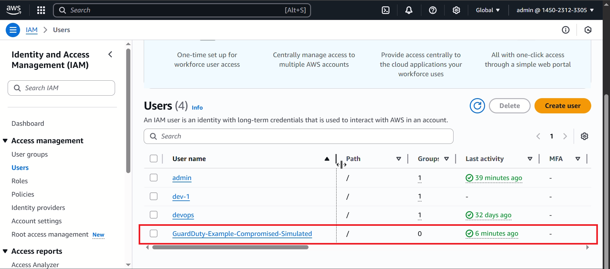
- In user GuardDuty-Example-Compromised-Simulated, we select the Security Credentials tab .
- In the Access Keys section, based on the Access Key ID information from Finding, we proceed to select Action -> Deactivate .
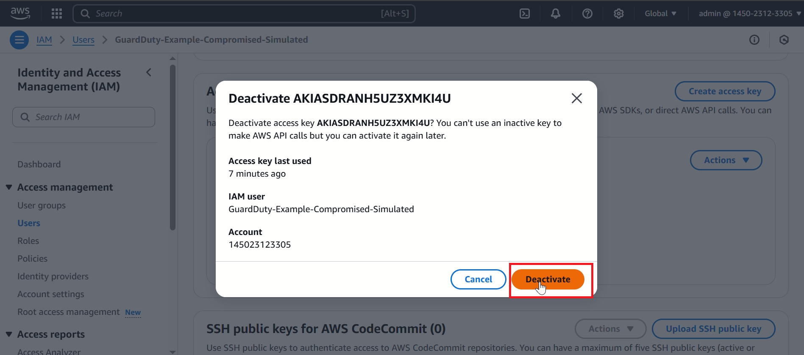
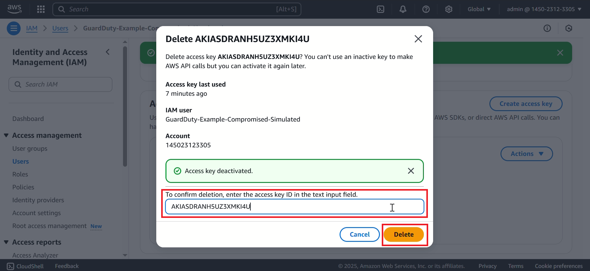